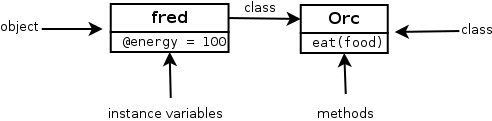
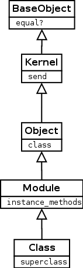
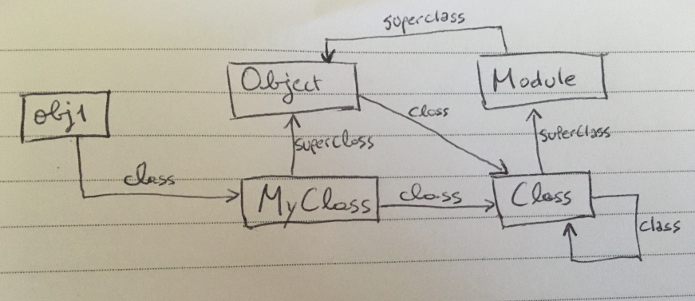
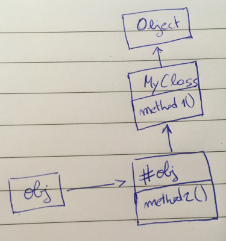
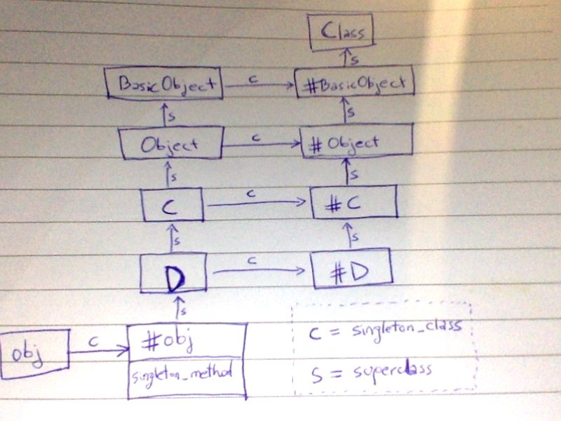

Sebastián Gurin - WyeWorks
When it comes to modeling a problem using an object oriented fashion, each language has its own peculiarities when it comes to, declaring objects and classes, code scope, object instantiation, inheritance, method lookup, etc.
When we talk about object model we are referring basically to these aspects:
This document tries to give a detailed description of how these things works and can be written in Ruby.
So, more than an Object Oriented Programming manual for Ruby, this document should be considered as descriptions on how objects work, understanding class declarations and Ruby peculiarities when dealing with objects, clkasses and methods.
It assumes the reader has some background on object oriented programming such as the concepts of object, class, message, method and inheritance. Basic Ruby background is recommended although not needed since the code snippets are simple and commented.
Aside, this is a millennial-friendly document: short paragraphs and code snippets right away!
Let’s start by explaining how to define a class and create new object instances in Ruby. In following sections we will be explaining exactly what’s happening and how it works in detail, right now the objective is just making sure we know how to do it.
The following code defines a class named Orc, with a method eat. When eat method is called an instance variable @energy is created by assigning it to a value. After the class definition, we then create an Orc instance and store it in local variable fred:
class Orc
def eat
@energy = 100
end
end
fred = Orc.new
In Ruby everything is an object, and every object is associated with a class of which we say it’s an instance of. An object’s class can be accessed through the method class.
And since everything is an object, classes themselves are instances of a class named Class. The following code tries to describe this:
fred = Orc.new
fred.class # => Orc
Orc.class # => ClassNote that in the previous code, the expression Orc.new is calling a method on the object Orc which is an instance of Class. That method new is therefore an instance method of Class, that’s how the object Orc is able to understand the :new message.
This will be described with more detail later, right now, the important thing to understand it that everything is an object which are always associated with a class. And that classes also are objects, instances of Class.
Unlike in Java or other static languages, in Ruby there is no connection between an object’s class and its instance variables. Instance variables just spring into existence when you assign them a value. In the previous example, the instance variable @energy is assigned only when the method eat is called. If it’s not then the instance variable is never defined. In conclusion we could have Orcs with and without @energy instance variable.
You can think of the names and values of instance variables as keys and values in a hash. Both the keys and the values can be different for each object.
Besides instance variables objects also have methods. But unlike instance variables, objects that share the same class also share the same methods, so methods are stored in the object’s class and not in the object itself as instance variables.
So, when we say “the method eat of object fred“ we will be actually referring, generally, to the instance method eat of fred‘s class, in our case Orc.
Strictly speaking, when talking about classes and methods, it would be incorrect to say “the method eat of Orc“. Orc, viewed as an object, won’t understand the message Orc.eat. Instead we should say “the instance method eat of Orc“. It would be correct to also say “the method new of Orc“ though, since Orc.new makes sense.
The following image tries to illustrate the relationship between objects, classes, instance variables and methods using the previous “orcs” example code.

As said in the previous section, methods of an object are actually instance methods of its class. So in our example, fred methods like eat are actually instance methods of Orc. The interesting part is that the same applies to Orc viewed as an object. Methods of Orc, like Orc.new, are instance methods of Class:
fred = Orc.new
fred.eat
p fred.class # Orc
p Orc.instance_methods(false) # [:eat]
p Orc.class # Class
p Class.instance_methods(false) # [:allocate, :superclass, :new]So, if classes are also objects, instances of Class, could we just use Class.new to define a new class? Of course: See Flat Scope section which contains a snippet that defines a our Orc using Class.new.
In Ruby, the operator < is used to extend a class, in other words, to define a subclass. The following snippet which makes our Orc extend a base class Unit:
class Unit
def die
@energy = 0
end
end
class Orc < Unit
def eat
@energy = 100
end
end
fred = Orc.newsuperFrom the previous example, we will override Unit#die to customize Orc‘s behaviors. Notice how we call super to execute the original Unit#die:
class Unit
def die
@energy = 0
end
end
class Orc < Unit
def die
super
p 'Ouch!'
end
endThe following example shows how to declare class level variables using @@ and declare class level methods using def self..
class Node
@@default_style = {bg: 'blue', fg: 'white'}
def render(style = @@default_style)
p style
end
def self.load_from_file(file)
Node.new # TODO
end
end
Node.new.render
Node.load_from_file('widget1.json').renderThe following diagram shows main classes of standard Ruby class hierarchy and a example method implemented by each.

Some interesting considerations:
Object the root class in the hierarchy is not Object but BaseObject.Class extends Module so all classes are also modules.
Similarly than any Object instance knows its class, also any Class instance knows its superclass. When defining a new class, if no superclass is specified, new classes extend Object.
Let’s consider a small example code and represent the class and superclass relationships between instances and the standard Ruby classes in a diagram:
class MyClass
end
obj1 = MyClass.new
p obj1.class # => MyClass
p MyClass.class.superclass # => Module
p MyClass.class.superclass.superclass # => Object
Although the concept of scope might seem not directly related with objects and classes, it plays a critical role while dealing with them in Ruby.
Similar to other scripting languages like JavaScript, understanding the rules for the scope on which the code runs is basic to write object oriented code in Ruby.
What do we exactly refer to when we say “scope” ? At any part of Ruby code, we say that at that moment, the scope is all the names we can reference from there, like local variables, instance and class variables, methods, constants, classes, modules, etc.
There’s a particular object in the scope that represents “the thing we are talking about now“, in Ruby more formally often called the current object. Most languages represent this object with a keyword, in Ruby the keyword self is used, while in other programming languages the this keyword is often used.
Depending on which part of the code you are, self represents different things. It’s always present and, in Ruby, it cannot be re-assigned.
The primordial operation objects must support is to receive messages. The current object, this is self, acts as the default object when the message receiver is not specified. For example, the following two statements are equivalent:
a = self.to_s
b = to_sAs you can see in the second line, we send a message to_s without providing the target object, so the message will be actually be dispatched by self, the current object.
class, module and defIn ruby, there is no real distinction between code that defines a class and code of any other kind. In a sense, the class keyword is more like a scope operator than a class declaration. Yes, it creates classes that don’t yet exist, but this could be considered just as a nice side effect: the core job of class is to move you to the scope of a class so you can declare methods.
There are exactly three places where a program leaves the previous scope behind and opens a new one:
And these three places are respectively marked with the keywords class, module, def. When opening one of these scope gates, the current scope is replaced so current local variables won’t be visible form within the new class code.
The following tries to illustrate how the scope changes through different parts of the code when defining a class. Notice how class and def are used to change the meaning of self, first to a new class Class1 and then referencing the instance, so we are able to declare classes, instance methods, class methods, etc:
p self # main
x = 1
class Class1
# previous local variable "x" is not visible from here
# inside a class but outside methods, "self" references the class
p self # Class1
# instance method declaration:
def method1
# inside an instance method, "self" references the instance
p self # #<Class1:0x00007fc66691d938>
end
# class method declaration ("self" here references the class)
def self.method2
# inside a class method, "self" references the class
p self # Class1
end
end
a = Class1.new
a.method1
Class1.method2Notice how:
self references the instance, similar to the this keyword in other programming languages. self references the class.
Using Scope Gates like class has many advantages since the inner code runs with a fresh scope. But sometimes we need to access outer local variables from inside a class which is not possible if using scope gates as shown in the previous section.
To workaround this problem, classes can be defined using Class.new instead the class scope gate.
Also, for outside local variables to be available inside methods, we need to use Module#define_method which allows to define new methods imperatively, without using the scope gate def:
initial_energy = 100
Orc = Class.new do
define_method :eat do
@energy = initial_energy
end
endTODO: more about Class.new and define_method : links or show the signatures
We’ve already seen in Scope Gates, how to change the scope using class to declare classes and def to declare methods.
class being a scope gate instead of a declaration, has a practical consequence: we can reopen existing classes - even standard library’s like String or Array - and modify them on the fly. This technique is often known as Open Class or more despectively as Monkeypatch.
This allows to partition a class declaration in several files:
class Sample
def method1
'method1'
end
end
# perhaps in another file
class Sample
def method2
'method2'
end
end
p Sample.new.method1, Sample.new.method2Also, this allows to add or modify the behavior of standard classes as well:
class String
def trim
self.strip
end
end
p ' asd ss '.trim
Formally, the keyword module, similarly as class is a scope gate that can be used to declare instance methods and variables that can be included by classes or other modules.
An important fact to understand, as shown before is that class is a module, or in other words, Class extends Module.
Similarly to what we’ve shown in Scope Gates, the following snippet illustrates the basics of Ruby modules and how self changes in module declarations:
module Module1
# inside the module scope and outside method declarations, self represent the module
p self # Module1
p self.class # Module
def method1
p self # #<A:0x00007fab94822a48>
end
end
class A
p self # A
include Module1
def method2
p self # #<A:0x00007fab94822a48>
end
def self.class_method1
p self # A
end
end
a = A.new
a.method1
In Open Class we shown how existing classes can be modified by just opening class several times. An important consequence is that any of this modifications will impact the rest of the code “globally” which could cause unexpected behaviors other part of the code that rely on a modified behavior.
To solve this problem, Ruby supports refine which basically allows to open classes but only for local code, without affecting outer code at all:
module StringUtil
refine String do
def reverse
"REVERSED"
end
end
end
module IsolatedCode
using StringUtil
p 'hello'.reverse # "REVERSED"
end
p 'hello'.reverse # "olleh"
Like in other programming languages, the concept of sending a message to an object (or in other words invoking an object’s method), is done using the dot operator ., like in tv.change_channel('bbc').
User optionally passes a list of arguments and given object method is invoked using the target object as self in the method’s body code. The expression evaluates in whatever the method returns:
class Car
def turn(where)
@direction = where
@@degrees[where]
end
end
car = Car.new
degrees = car.turn(:left)
What’s interesting of Ruby is that it support more than one flavor to write message expressions:
result = my_object.remove_obsolete(:serie1, [a, b])
result = my_object.remove_obsolete :serie1, [a, b]Another cool syntax alternative for these call expressions are keyword arguments. instead of passing a list of unnamed arguments, pass a hash of named arguments. This is particularly useful when building APIs with many arguments:
result = my_object.players(serie_id: :serie1, filters: [a, b], round: 1)
result = my_object.players serie_id: :serie1, filters: [a, b], round: 1
Now how is it implemented each of the message syntax above ?
class Foo
def remove_obsolete(serie_id, filter = [])
end
def players(serie_id: nil, filter: [], round: nil)
remove_obsolete(serie_id, filter).select { |person| person.is_playing }
end
end
When you call a method, Ruby does two things:
selfAlthough method lookup is a process known in most object oriented languages, it’s important to understand how this exactly works in Ruby.
Remember how, in Section Methods we said that instance variables are owned nby the instances but instance method’s are owned by the class ? So in the simplest case, when Ruby finds an expression like foo.bar() it will look for the method bar in foo.class‘s class.
Because methods could be defined in super classes or in modules refining super classes, more generally, Ruby will look up for methods by climbing up the object’s class ancestors chain.
Tip: Ruby classes support the method ancestors which returns the class’ ancestors chain, in order, from the class itself, up to BaseObject, including modules used or refining the object’s class hierarchy. Example:
MySubclass.ancestors # => [MySubclass, MyClass, Object, Kernel, BasicObject]Notice that Kernel, which is a module, not a class, is also included in the ancestors of MySubclass, just like any class.
What’s unusual in Ruby compared to other languages is that besides the list of arguments, methods also accepts a code block that they can yield whatever times they need. For example, in the expression [1, 2, 3].each() { |item| p item} we are invoking the method each with no arguments and passing a message block right after the call expression. Array.each will execute this block passing each of the array’s items as argument.
Let’s implement JavaScript Array.prototype.some which executes given block on each item until the block returns truthy:
class Array
def some
throw 'No block passed' unless block_given?
i = 0
while i < length
result = yield self[i]
return self[i] if result
i += 1
end
end
end
# prints "123"
[1, 2, 3, 4, 5].some() do |n|
print n
n > 2
endAs you can see in the last statement, some() is invoked without passing any arguments and next to the call, there’s a block expression do |n| .... This is what we call the message block, which is invoked in some‘s body, using the yield expression result = yield self[i]. result will contain whatever value was returned by given block.
Also notice how we use block_given? to know if a message block was passed.
As a last example, here is a method that accepts both, a callback argument and a message block. In this case, instead of using yield and the implicit block, we use an alternative syntax by declaring a last argument starting with & in which case it will be the passed block object, if any. Notice how, instead of using yield we use block.call:
def set_interval
# artificial event loop listener
end
def wait_for(predicate, &block)
timer = set_interval do
if predicate
clear_interval timer
block.call
end
end
end
t = Time.now + 1
wait_for(proc { Time.now > t }) { print '1 second passed' }Ruby objects support the method yield_self (and its alias then). The idea is simple, just pass self as the argument to the message block.
In the snippet print 2.yield_self { |n| n * 3.14 } we send the yield_self message to the object 2 which causes given message block to be invoked passing 2 as argument. In the previous code, parameter n‘s value will be 2.
Using its alias then we can write data transformation as a series of thens - feels familiar to JavaScript promises or Elixir pipe operator (|>):
def name_starts_with(data, name_prefix)
data
.then { |persons| persons.map { |person| person[:name] } }
.then { |names| names.select { |name| name.start_with? name_prefix } }
.then { |names| names.sort }
end
p name_starts_with [{ name: 'andrew' }, { name: 'laura' }], 'a'Note: Ruby objects also support tap method but unlike yield_self, it yields self and returns self.
Ruby language supports declaring methods as public, protected or private. In general they have the same purpose as in other languages such as Java or C# but in Ruby, private in particular has a peculiar semantics that can be summarized with a single simple rule: private methods cannot be called with an explicit receiver. Go back to section Self: the default object where we described messages with explicit receiver like foo.bar() versus messages with implicit self receiver like bar(). Then every time you call a private method, it must be on the implicit receiver: self. If an expression with an explicit receiver is used then it throws an error.
The following is a controversial example which shows that a private method cannot be called, even from its own class if the message receiver is given explicitly:
class Foo
def public_method
self.private_method
end
private
def private_method; end
end
Foo.new.public_methodRunning the snippet will throw NoMethodError: private method 'private_method' called [...]. To solve the problem we just need to replace self.private_method with private_method - in other words, call the private method with the implicit self receiver.
TODO
attr :foo
attr_writable :bar
etc
The ability to run any code inside a class definition, plus its friendly syntax allow Ruby programmers to conceptualize what we call class macros. Formally, they are statements inside the class scope calling class methods to perform operations on the class itself, often using Ruby’s metaprogramming API to modify the class behavior.
When we described accessors, we where actually talking about Module‘s class methods that are called in statements inside the class definition. The expression attr :foo for example is actually calling Module.attr() method.
For Ruby newcomers, expressions like attr :foo in the middle of class definitions could look like a syntax thing, but actually there’s no special syntax at all, we are just calling a class method that will modify the class to support attr semantics.
Let’s write our own class macro second, that, given a method named name it will create a second method named "#{name}2" that calls the original method and log the call:
class Base
def self.second(*methods)
methods.each{|method|
define_method("#{method}2") do |*args, &block|
print "'#{method}' called"
send method, *args, &block
end
}
end
end
class Elf < Base
second :foo
def foo; end
end
elf = Elf.new
elf.foo
elf.foo2 # => 'method' called
Ruby supports method definition to handle attribute getter and assignation.
class Bar
def foo=(value)
@foo = value
end
def foo
@foo
end
end
bar = Bar.new
bar.foo = 2
p bar.foo
Ruby permits operator overloading, allowing one to define how an operator shall be used in a particular program. For example a + operator can be define in such a way to perform subtraction instead addition and vice versa. The operators that can be overloaded are +, -, /, *, **, %, etc and some operators that can not be overloaded are &, &&, |, ||, (), {}, ~, etc.
Operator functions are same as normal functions. The only differences are, name of an operator function is always symbol of operator followed operator object. Operator functions are called when the corresponding operator is used. Operator overloading is not commutative that means that 3 + a is not same as a + 3.
In the following example we write the backbones of a class for complex numbers and implement the + operator.
class ComplexNumber
attr_reader :real, :imaginary
def initialize(real = 0, imaginary = 0)
@real = real
@imaginary = imaginary
end
def +(other)
ComplexNumber.new @real + other.real, @imaginary + other.imaginary
end
def to_s
"ComplexNumber(#{@real}, #{@imaginary})"
end
end
a = ComplexNumber.new(1, 1)
b = ComplexNumber.new(2, 2)
print a + b # => ComplexNumber(3, 3)
Remember how we said before that an object’s methods are actually part of the object’s class and not the object itself? The implication is that objects of the same class share their methods.
Sometimes though, is useful to support custom object’s behavior independently of a particular class, this is, given an object patch the object itself with custom behavior, without impacting the object’s class.
This makes
Although this is often not supported by static languages like Java or C++, other scripting languages like JavaScript supports this very straightforward:
var obj = new MyClass
obj.method1 = function() {
return 'hello'
}Can we accomplish this in Ruby? The answer to this question will give us the chance to learn Ruby language core features: singleton methods and singleton classes.
The Ruby code equivalent to previous JavaScript snippet could be something like:
obj = MyClass.new
def obj.method1
'hello'
endAs you can see we’ve defined a new method method1 but just for the instance obj. The rest of MyClass instances won’t have it.
Notice how we use the scope gate def to define method obj.method1 without using the class operator.
The same as before but using define_singleton_method so we don’t need to use class scope gate:
obj = MyClass.new
obj.define_singleton_method(:method1) { 'hello' }An interesting fact is that, class methods are actually singleton methods of the class. For example in MyClass.my_class_method(), my_class_method is actually a singleton method of MyClass.
So, where do these singleton methods live ? As we said, methods are not part of instances but part of the instance’s class. On the other side, singleton methods couldn’t be part of the object class since if so, all instances of the class would support them. So, where are singleton methods stored in the Ruby Object Model ?
In Ruby, objects are associated not only with a class but also with what we call the object’s singleton class
So while we use obj.class to access an object “normal” class, we use obj.singleton_class to access an object singleton class.
class << obj - the singleton class scope gateRuby also supports another syntax besides singleton_class to access an object’s singleton class which is based on the class keyword:
obj = MyClass.new
class << obj
def method1
'hello'
end
endRemember how we said class is a scope gate ? Well in this case the expression class << obj opens the scope to obj‘s singleton class the same way class C opens the scope to a “normal” C class. Methods and instance variables defined inside will belong to obj‘s singleton class.
TODO: obj.singleton_class extends obj.class
TODO: golden object model rules - pg 125
Previously, in Method lookup, we explained how the Ruby interpreter finds a method. Well, that was without considering singleton classes. Now that we know they exists, the missing part is the role of singleton methods in this scenario.
Heads up: We represent the singleton class of an object obj with #obj.
class MyClass
def method1; end
end
obj = MyClass.new
def obj.method2; end
As we said previously we represent the singleton class of an object named obj with #obj. Also, since classes are also objects, we represent the singleton class of a class named MyClass with #MyClass. As said before, class methods are methods of the class’s singleton class, so class methods of MyClass are actually singleton methods of #MyClass.
The following diagram shows the relationship between class, singleton_class and superclass.

In this mix of classes, singleton classes, instance methods, class methods and singleton methods, a Ruby developer could have a hard time answering questions like: “Which method in this complicated hierarchy gets called first?” or “Can I call this method from that object?”. The following seven rules describe the relationwhip between classes, singleton classes, instance methods, class methods and singleton methods and also gives a recipe on how method lookup works, now considering singleton classes and singleton methods:
basicObject, has exactly one ancestor - either a superclass or a module. This means you have a single chain of ancestors from any class up to BasicObject.In Ruby, any reference that starts with an uppercase letter, including name of classes and modules, is a constant. Ruby constants are very peculiar when compared to other programming language’s constants.
First of all, unlike other programming languages, Ruby constants can be changed and reassigned. For example, try to re-assign constant String to break Ruby beyond repair.
Second, class names and module names are constants. In the following example both MyClass and my_class references to the same instance of Class with the only difference being that MyClass is a constant and my_class a local variable:
class MyClass
end
my_class = MyClassSo, if we can change the value of a constant, how are they different from a variable? The only important difference has to do with their scope.
All the constants in a program are arranged in a tree similar to a file system where modules (and classes) are directories and regular constants are files. Like in a file system, we can have multiple files with the same name as long as they live in different directories. We can even refer to constants by their path, as we would do with a file.
In the following example we have some modules and classes which defines constants and reference inner and outer constants by their paths. Notice that constants’ paths use a double colon as a separator (similar to C++ scope operator). Also, we can reference a constant by its absolute path by prefixing the constant path with :: :
X = 'constant 1'
module M
X = 'constant 2'
class C
X = 'constant 3'
p ::X # => constant 1
p ::M::C::X # => constant 3
end
end
p X # => constant 1
p M::X # => constant 2
p M::C::X # => constant 3Ruby’s Module class aso provides the instance method Module#constants which returns all constants in the current scope, analogous to the ls UNIX command.
Also, the class method Module.constants will return all the top-level constants in the current program, including class names.
Finally, we can use the class method Module.nesting to get the current path:
module M
class C
module M2
p Module.nesting # => [M::C::M2, M::C, M]
p Module.constants # => [:M2, :C, a lot more...
end
end
end